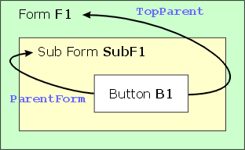

TOPPARENT
Syntax
TOPPARENT.THIS
TOPPARENT. Object_Name
TOPPARENT. Property
|
Argument |
Description |
|
Object_Name |
The name of an form component. |
|
Property |
The name of a form property. |
Description
TOPPARENT is an alias for the top-most form or browse. Assume that a form called F1 contains a sub-form called SubF1. SubF1 has a button called B1. A script attached to B1 that referred to ParentForm would be referring to SubF1, while a reference to TopParent would be referring to F1.

 Note : TopParent
is never preceded by a colon ":".
Note : TopParent
is never preceded by a colon ":".
Examples
|
dim obj as P obj = topparent.this 'get a pointer to the top form count = obj.children() 'find out how many child objects it has |
See Also
Language Reference?, Reserved Words
Supported By
Alpha Five Version 5 and Above